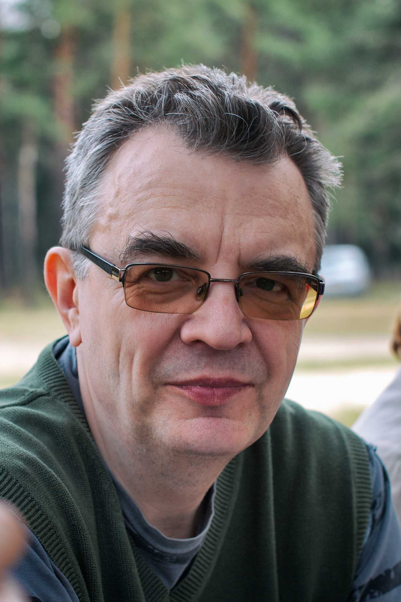

People  Nikolay
Fedorovich Zobov Nikolay
Fedorovich Zobov
Nikolay Fedorovich Zobov
E-mail: zobov@appl.sci-nnov.ru
Tel: +7 (831) 416-49-32
|  |
Nikolay F. Zobov, born December 13th, 1959.
Graduated from Moscow Engineering Physics Institute in 1983. Since then has been working at Institute of Applied Physics RAS.
Current position - senior research scientist. Received Ph.D. degree in physics and mathematics in 2005. Major interests - high resolution experimental studies of
molecular complexes in millimeter and submillimeter wave range; development of new theoretical methods of analyzing light molecules spectra; assignment of hot (up to 3000 K)
and cold (room temperature) spectra of water; analysis of water molecule spectra up to and above dissociation limit; first principals calculations of spectra of molecular ion -
H3+.
|
Collaboration with theoreticians and experimentalists from University College London (UK), University of Waterloo (Canada), Eotvos Lorand University (Hungary),
Ecole Polytechnique Federale de Lausanne (Switzerland), University of Arizona (USA), National Optical Astronomy Observatory (USA), National Institute of Standards and Technology (USA),
Imperial College of Science, Technology and Medicine (UK), Vrije Universiteit (Netherlands), Rutherford Appleton Laboratory (UK), University of York (UK),
V. E. Zuev Institute of Atmospheric Optics (Russia), Jet Propulsion Laboratory (USA), Universiteit Joseph Fourier (France), Universiteit de Reims Champagne-Ardenne (France),
Harvard-Smithsonian Center for Astrophysics (USA), Institut d'Aeitronomie Spatiale de Belgique (Belgium), Universiteit Libre de Bruxelles (Belgium),
University of Science and Technology of China (China).
In 1992-1994 worked as a guest researcher at the National Institute of Standards and Technology, Gaithersburg, USA.
From 1994 close cooperation with the group of Prof. Jonathan Tennyson from University College London (up to 30 visits to UCL during these years).
More than 70 papers.
|